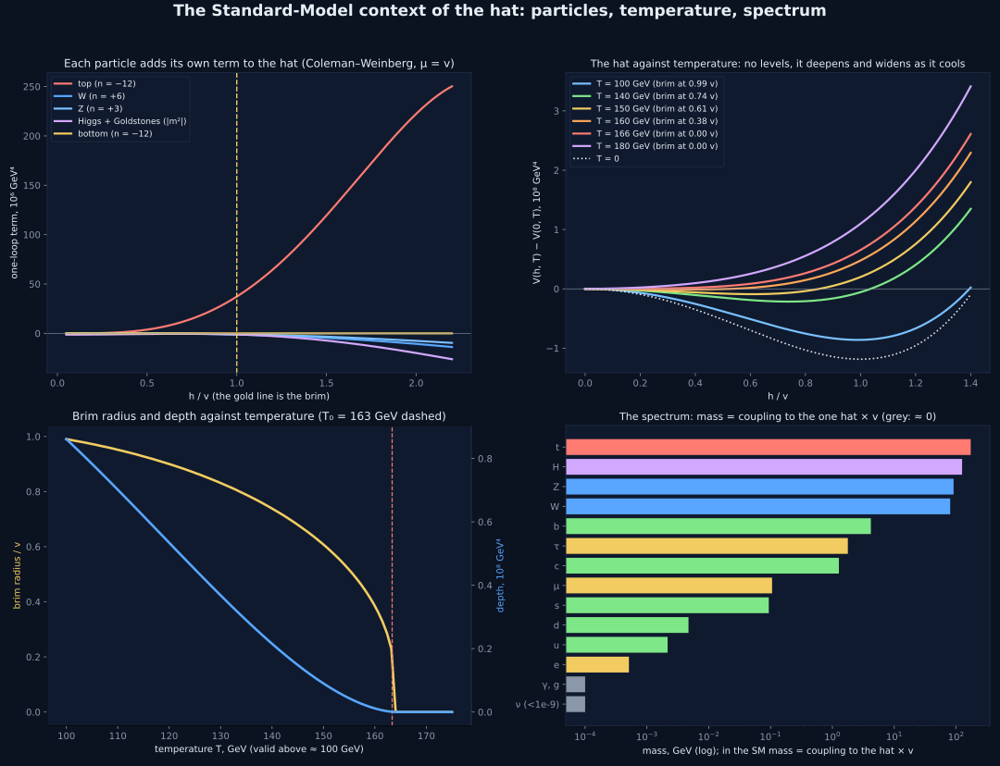

The Lagrangians on the Mexican hat, v1.0 (paths drawn on the potential surface)
WitchesHat_Lagrangians_v1.0_L_IO

WitchesHat_Lagrangians_v1.0_L_NN

WitchesHat_Lagrangians_v1.0_L_SM

WitchesHat_Lagrangians_v1.0_L_dynamic_original

WitchesHat_Lagrangians_v1.0_sm_context
